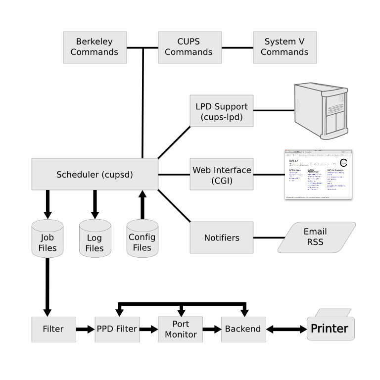

This design description documents the overall organization of CUPS. The purpose is not to provide a line-by-line description of the CUPS source code, but rather to describe the overall architecture and location of key pieces so that developers can more easily understand the underlying operation of CUPS.
Like most printing systems, CUPS is designed around a central print scheduling process that dispatches print jobs, processes administrative commands, provides printer status information to local and remote programs, and informs users as needed. Figure 1 shows the basic organization of CUPS.
The scheduler is a HTTP/1.1 and IPP/2.1 server application that manages HTTP and IPP requests, printers, classes, jobs, subscriptions, and notifications on the system. HTTP is used for normal web browser services as well as IPP operation messages passed via HTTP POST requests with the application/ipp content type. The scheduler uses a series of helper applications based on the Common Gateway Interface ("CGI") to provide dynamic web interfaces and can be configured to run additional site-specific programs or scripts for the web interface.
The scheduler is designed as a traditional single-threaded server process which runs external processes to do longer-term operations such as printing, notification, device/driver enumeration, and remote printer monitoring. External processes are normally run as a non-privileged account ("lp") and, on some platforms, with additional restrictions that limit what the processes are allowed to do.
The maximum number of simultaneous clients and print jobs that can be supported is primarily limited by the available server memory, file descriptors, and CPU - the scheduler itself imposes no hard limits.
|  |
The scheduler uses several configuration files to store the server settings (cupsd.conf), available classes (classes.conf), available printers (printers.conf), current notification subscriptions (subscriptions.conf), and supported file types and filters (mime.types, mime.convs). In addition, PostScript Printer Description ("PPD") files or interface scripts are associated with each printer, and the scheduler has cache files for remote printers, PPD files, and current jobs to optimize the scheduler's startup speed and availability.
The scheduler stores job files in a spool directory, typically /var/spool/cups. Two types of files will be found in the spool directory: control files starting with the letter "c" ("c00001", "c99999", "c100000", etc.) and data files starting with the letter "d" ("d00001-001", "d99999-001", "d100000-001", etc.) Control files are IPP messages based on the original IPP Print-Job or Create-Job messages, while data files are the original print files that were submitted for printing. There is one control file for every job known to the system and 0 or more data files for each job.
Control files are normally cleaned out after the 500th job is submitted, while data files are removed immediately after a job has successfully printed. Both behaviors can be configured.
The scheduler keeps three kinds of log files which are normally stored in the /var/log/cups directory. The access_log file lists every HTTP and IPP request that is processed by the scheduler. The error_log file contains messages from the scheduler and its helper applications that can be used to track down problems. The page_log file lists every page that is printed, allowing for simple print accounting.
Log files are rotated automatically by the scheduler when they reach the configured size limit, by default 1MB. If the limit is set to 0 then no rotation is performed in the scheduler - this mode is often used by Linux distributions so they can use the logrotated(8) program to rotate them instead.
CUPS provides the Berkeley lpc(8), lpq(1), lpr(1), and lprm(1) commands. In general, they function identically to the original Berkeley commands with the following exceptions:
CUPS provides the System V cancel(1), lp(1), lpadmin(8), lpmove(8), and lpstat(1) commands. In general, they function identically to the original System V commands with the following exceptions:
CUPS provides the cupsaccept(8), cupsaddsmb(8), cupsdisable(8), cupsenable(8), cupsreject(8), cupstestppd(1), lpinfo(8), and lppasswd(1) commands. The cupsaccept, cupsdisable, cupsenable, and cupsreject commands correspond to the System V accept, disable, enable, and reject commands but have been renamed to avoid confusion and conflicts with the bash(1) internal enable command of the same name.
LPD client support is provided via the cups-lpd(8) program. Incoming LPD requests are accepted on TCP port 515 by the local inetd(8), launchd(8), or xinetd(8) process and forwarded to the cups-lpd program for conversion to the corresponding IPP request(s).
The cups-lpd program conforms, for the most part, to RFC 1179: Line Printer Daemon Protocol, but does not enforce the privileged source port restriction specified in that document. In addition, the banner page and output format options are usually overridden via command-line options to the cups-lpd program when it is invoked by the corresponding super-daemon program.
The web interface is supported by five CGI programs. Table 1 describes the purpose of each of the programs.
| Program | Location | Description |
|---|---|---|
| admin.cgi | /admin | Provides all of the administrative functions |
| classes.cgi | /classes | Lists classes and provides class management functions |
| help.cgi | /help | Provides access to online help documents |
| jobs.cgi | /jobs | Lists jobs and provides job management functions |
| printers.cgi | /printers | Lists printers and provides printer management functions |
Notifiers (notifier(7)) provide the means for sending asynchronous event notifications from the scheduler. Notifiers are executed with the recipient information on the command-line and the event data on the standard input. For example:
CUPS_SERVERBIN/notifier/foo recipient user-data
CUPS includes two notifiers: mailto to provide SMTP-based email notifications and rss to provide Really Simple Syndication ("RSS") notifications from the scheduler. Additional notifiers can be installed in the notifier directory as needed to support other methods.
Filters (filter(7)) convert job files into a printable format. Multiple filters are run, as needed, to convert from the job file format to the printable format. A filter program reads from the standard input or from a file if a filename is supplied. All filters must support a common set of options including printer name, job ID, username, job title, number of copies, and job options. All output is sent to the standard output.
CUPS provides filters for printing text, PostScript, PDF, HP-GL/2, and many types of image files. CUPS also provides printer driver filters for HP-PCL, ESC/P, and several types of label printers. Additional filters can be registered with CUPS via mime.convs and PPD files.
Port monitors handle the device- and channel-specific data formatting for a printer. Port monitors use the same interface as filters.
CUPS includes two port monitors: the bcp port monitor which supports the PostScript Binary Communications Protocol ("BCP") and the tbcp port monitor which supports the PostScript Tagged Binary Communications Protocol ("TBCP"). Additional port monitors can be registered in PPD files.
Backends (backend(7)) send print data to the printer and enumerate available printers/devices as needed. Backends use the same interface as filters.
CUPS includes backends for AppSocket (JetDirect), IPP, LPD, and USB connections and DNS-SD and SNMP for discovery. Additional backends can be added as needed without additional configuration.
CUPS makes use of several general-purpose libraries to provide its printing services. Unlike the rest of CUPS, the libraries are provided under the terms of the GNU LGPL so they may be used by non-GPL applications.
The CUPS library contains all of the core HTTP and IPP communications code as well as convenience functions for queuing print jobs, getting printer information, accessing resources via HTTP and IPP, and manipulating PPD files. The scheduler and all commands, filters, and backends use this library.
The CUPS CGI library provides all of the web interface support functions. It is used by the CGI programs to provide the CUPS web interface.
The CUPS driver library provides access to the dithering, color conversion, and helper functions used by the CUPS sample printer drivers.
The CUPS imaging library provides functions for managing large images, doing colorspace conversion and color management, scaling images for printing, and managing raster page streams. It is used by the CUPS image file filters, the PostScript RIP, and all raster printers drivers.
The CUPS MIME library provides file typing and conversion functions and is used by the scheduler and cupsfilter(8) command to auto-type and convert print files to a printable format.
The CUPS PPD compiler library provides access to driver information files and is used by the PPD compiler tools as well as the cups-driverd(8) helper program to generate PPD files and message catalogs for localization.